Серая керамическая плитка в наличии в Санкт-Петербурге
Подборка 23 позиций категории «серая керамическая плитка»: реальные товары из складского каталога с размерами, производителями, сортами и артикулами. Оттенки объединены в общий цвет по названию товара.
23 позицийСуммарный остаток: 6 849 м²5 форматов
Производители в подборке: Нефрит-Керамика, Kerama Marazzi. Остатки по складскому каталогу на 1 октября 2026 года; уточните наличие и цену перед заказом.
Серая керамическая плитка в наличии
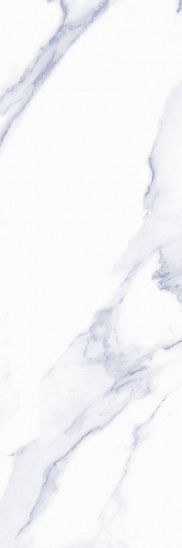
Нарни Серый600 × 200 × 9 мм, Нефрит-Керамика, СтандартВ наличии 1 347 м²Артикул: 00-00-7-17-10-06-1030450 ₽/м²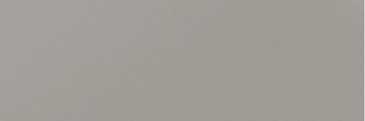
Моногамма Серый600 × 200 × 9 мм, Нефрит-Керамика, ПКВ наличии 840 м²Артикул: 00-00-3-17-01-06-2501Узнать цену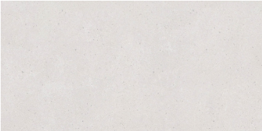
Прайм Цемент Светло-Серый600 × 300 × 9 мм, Нефрит-Керамика, СортоваяВ наличии 802 м²Артикул: 00-00-4-18-00-06-5105619 ₽/м²Mono smoke Серый600 × 300 × 9 мм, Нефрит-Керамика, ПКВ наличии 633 м²Артикул: 00-00-3-18-00-06-2430Узнать цену Даф Серый600 × 200 × 9 мм, Нефрит-Керамика, ОптимумВ наличии 420 м²Артикул: 00-00-7-17-10-06-642Узнать цену
Даф Серый600 × 200 × 9 мм, Нефрит-Керамика, ОптимумВ наличии 420 м²Артикул: 00-00-7-17-10-06-642Узнать цену Сарагоса Серый600 × 300 × 9 мм, Нефрит-Керамика, ОптимумВ наличии 385 м²Артикул: 00-00-7-18-01-06-9926Узнать цену
Сарагоса Серый600 × 300 × 9 мм, Нефрит-Керамика, ОптимумВ наличии 385 м²Артикул: 00-00-7-18-01-06-9926Узнать цену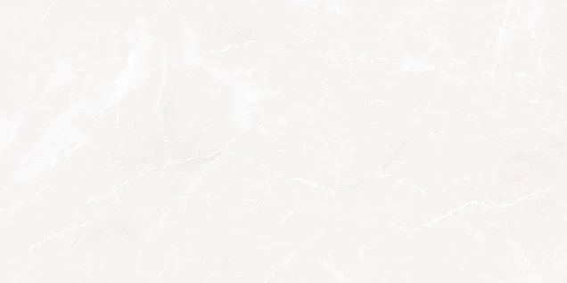
Sens Light Серый500 × 250 × 9 мм, Нефрит-Керамика, ОптимумВ наличии 368 м²Артикул: 00-00-7-10-00-06-3185626 ₽/м²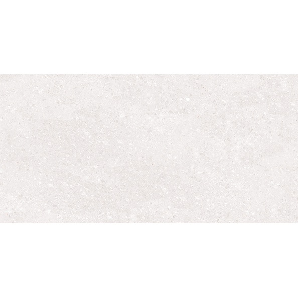
Норд Серый400 × 200 × 8 мм, Нефрит-Керамика, ОптимумВ наличии 350 м²Артикул: 00-00-7-08-00-06-2055Узнать цену Kids Серый400 × 200 × 8 мм, Нефрит-Керамика, СтандартВ наличии 268 м²Артикул: 00-00-5-08-01-06-3025543 ₽/м²
Kids Серый400 × 200 × 8 мм, Нефрит-Керамика, СтандартВ наличии 268 м²Артикул: 00-00-5-08-01-06-3025543 ₽/м²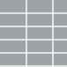
Слим Серый600 × 300 × 9 мм, Нефрит-Керамика, ПКВ наличии 207 м²Артикул: 00-00-3-18-00-06-3052Узнать цену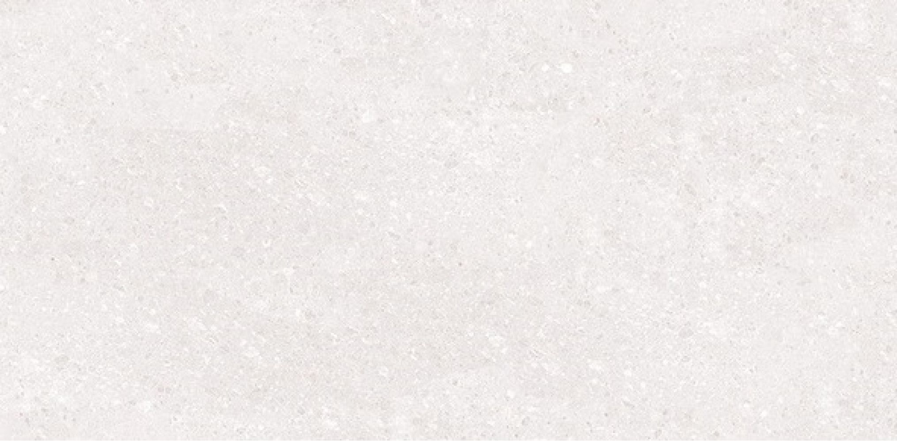
Норд Серый400 × 200 × 8 мм, Нефрит-Керамика, СтандартВ наличии 174 м²Артикул: 00-00-5-08-00-06-2055498 ₽/м² Interni Grey Серый500 × 250 × 9 мм, Нефрит-Керамика, ОптимумВ наличии 173 м²Артикул: 00-00-7-10-00-06-3195626 ₽/м²
Interni Grey Серый500 × 250 × 9 мм, Нефрит-Керамика, ОптимумВ наличии 173 м²Артикул: 00-00-7-10-00-06-3195626 ₽/м²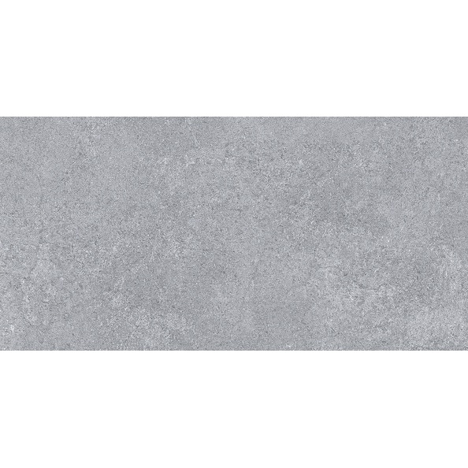
Фьюжен Серый400 × 200 × 8 мм, Нефрит-Керамика, СтандартВ наличии 172 м²Артикул: 00-00-5-08-01-06-2730498 ₽/м²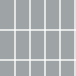
Про Матрикс Серый Светлый Матовый обрезной300 × 600 × 9 мм, Kerama MarazziВ наличии 126 м²Артикул: 11259RУзнать ценуSaboya Серый600 × 300 × 9 мм, Нефрит-Керамика, СтандартВ наличии 111 м²Артикул: 00-00-5-18-00-06-1082619 ₽/м² Касл Серый500 × 250 × 9 мм, Нефрит-Керамика, ОптимумВ наличии 69 м²Артикул: 00-00-7-10-00-06-1055626 ₽/м²Сарагоса Серый600 × 300 × 9 мм, Нефрит-Керамика, ПКВ наличии 68 м²Артикул: 00-00-3-18-00-06-9930Узнать ценуКарен Серый400 × 200 × 8 мм, Нефрит-Керамика, СтандартВ наличии 64 м²Артикул: 00-00-5-08-00-07-1780498 ₽/м²
Касл Серый500 × 250 × 9 мм, Нефрит-Керамика, ОптимумВ наличии 69 м²Артикул: 00-00-7-10-00-06-1055626 ₽/м²Сарагоса Серый600 × 300 × 9 мм, Нефрит-Керамика, ПКВ наличии 68 м²Артикул: 00-00-3-18-00-06-9930Узнать ценуКарен Серый400 × 200 × 8 мм, Нефрит-Керамика, СтандартВ наличии 64 м²Артикул: 00-00-5-08-00-07-1780498 ₽/м²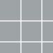
Росси Серый385 × 385 × 8,5 мм, Нефрит-Керамика, СтандартВ наличии 63 м²Артикул: 01-10-1-16-01-06-1752Узнать ценуСтоун Серый600 × 300 × 9 мм, Нефрит-Керамика, ОптимумВ наличии 61 м²Артикул: 00-00-7-18-00-06-1885Узнать цену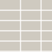
Frida Grey600 × 300 × 9 мм, Нефрит-Керамика, ПКВ наличии 57 м²Артикул: 00-00-3-18-01-06-3325Узнать ценуHugo Серый600 × 300 × 9 мм, Нефрит-Керамика, СтандартВ наличии 54 м²Артикул: 00-00-5-18-00-06-1088Узнать цену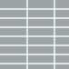
Нарни Серый600 × 200 × 9 мм, Нефрит-Керамика, ОптимумВ наличии 37 м²Артикул: 00-00-7-17-10-06-1030450 ₽/м²Нужен расчёт для объекта?
Отправьте артикулы или названия и необходимое количество. Проверим актуальные остатки, цену и варианты отгрузки.
Запросить расчёт по почте